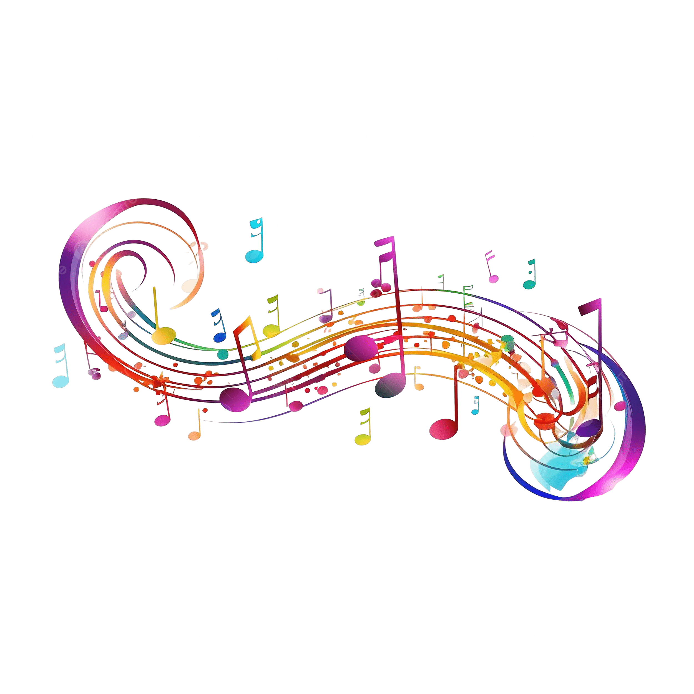
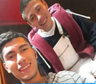

♦Bienvenidos Al Portafolio De♦
♥James Steven Segura Bociga ♥
Estudiante Adso, Analítico, Artista hábil, resolutivo.
Estudiante Adso, Analítico, Artista hábil, resolutivo.
►Joven entusiasta del Análisis y Desarrollo de Sistemas
que combina su destreza técnica con una profunda pasión por el arte.
►Me encuentro en formación en programación, me BE destaco por la pasión por el dibujo, la música y la poesía.
►Pintura Residencial: pintor y preparador de superficies.
►Capacidad para analizar
información y tomar decisiones
informadas.
►Conocimientos especialozados: Experticia en areas especificas
como automatizacion bioseguridad ingenieria etc
►Habilidad para identificar problemas y encontrar soluciones
creativas y efectivas
►Automatización Industrial: Implementación y
mantenimiento de sistemas
►Automatizados, mejorando la eficiencia y
seguridad en plantas de producción.
►Bioseguridad: Desarrollo de protocolos de bioseguridad en laboratorios
industriales,
►reduciendo riesgos biológicos y cumpliendo con normativas internacionales.
►Programación: la gestión de sistemas automatizados,
optimizando el rendimiento y la precisión.
►Capacitación: Formación de personal en automatización y bioseguridad,
mejorando competencias técnicas.
►Curso Especial en Bioseguridad: Certificaciones en prácticas de bioseguridad,
enfocadas en prevención de riesgos biológicos.
Curso en Python: Conocimientos en programación y control en Python.
Experiencia Laboral: Trabajó como pintor residencial en un rol de apoyo.
Tecnólogo en Automatismos: Formación técnica en automatización y control industrial.
►Servicio Militar: Adquirió habilidades en disciplina y trabajo en equipo.
►Graduado de Bachillerato: Educación secundaria completa.
►Estudios Actuales: Estudia Desarrollo de Software (ADSO),
con interés en programación y desarrollo de software.
♫Mis hobbies son estar en familia
♫Salir de fiestas
♫Compartir con amigos
♫Ayudar a mis padres
